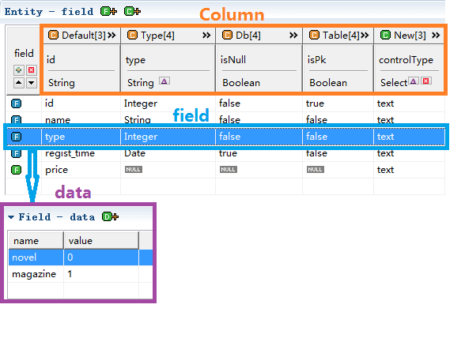
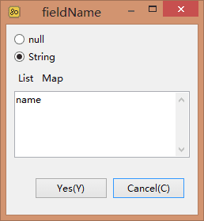

field: As the field of the entity model, its source is the field of the database table, view or java class, and the user's own new definition of field.
column: The common properties of field, such as id, name, type, and so on.
data: The private property of field, and the difference between column is that column is the property of all field, and data belongs to only one field.

The following is the distribution of these operations
At 1 and 5 click, you can add new field, or right-click, click new, and fill in the new field name "price" here.
New field price is created, and you can see that if the field is new, the icon color is green.
You can also add fields when the model is transformed, read in detail: Init Scheme add Field。
Click the selected field at 2, you can delete, or select the field, right-click to delete, all fields can be deleted.
Clicking the selected field at 3 can move up the field, or select the field right-click.
Clicking the selected field at 4 can move down the field, or select the field right-click.
Except for the id column that cannot be modified, all other fields can be modified. Select what you need to change, and click
String type: you can choose null, or you can enter any string.
Boolean type: you can choose null, true or false.
Select type: you can choose null or other set options.
After mapping:
After convert:
In actual development, we need to modify the content of the model, but we all need to do it manually. Is there a way to set it up when the model is transformed? The answer is yes, that is, set by init scheme. Field through init scheme, can save most of the time you modify the model. Read about: Init scheme field.
In actual development, an original model alone can not fully meet our business needs. For example, the field need to a field name, control type(such as text, select, date), whether the field is be queried. All requires new columns to extend the properties of the fields.
isQuery is a column whether the field is be queried.

Click the new column at 6, and there are 3 types of column, String, Boolean, and Select:
String type can be null or fill in default value.
As you can see, the new column fieldName is created.
Boolean: Boolean type can be null or select true or false.
As you can see, the column isQuery is created, and the value is true.
Select: Select options type can be null or add your own options. a new column called controlType, add options in the table, we added 3 types of controls, text, select and date, the default option is text.
As you can see, the column isQuery is created, and the default value is text.
You can delete columns at 8  , Only new columns can be deleted.
, Only new columns can be deleted.
Just like modifying field, click .
String type modify

Boolean type modify
Select type modify
After convert
Liking field convert, in actual development, we need to modify the content of the model, but we all need to do it manually. Is there a way to set it up when the model is transformed? The answer is yes, that is, set by init scheme. Field through init scheme, can save most of the time you modify the model. Read about: Init scheme field.
Click to add.
Data has 2 attributes, name and value.

Select the data item, right-click to delete.
Select the data item, right-click to modify.
Add two columns:
Select model in task

Select model in template(code assist)

Specify that the value of relation is one.

Iterate over field to generate a query page

object is entity, use the for tag to iterate over object.fields, and use get tag to get the field properties or methods.
Result
The example here is a simplified query page. Complete example please read: Generate query page
Tip: through code assist you can find the properties and methods.
Tip: mouse select or hover can see the value.
Iterate over field to generate a add page
field，field.property("fieldName") is get the fieldName, field.property("controlType") is get the control type, generates different types of control based on controlType

Result
The example here is a simplified add page. Complete example please read: Generate add page
Tip: mouse select or hover can see the value.

The data of type
In add page, type is a select which has same options.

In select options, option value is data.value, option content is data.name
Result
Tip: mouse select or hover can see the value of data.